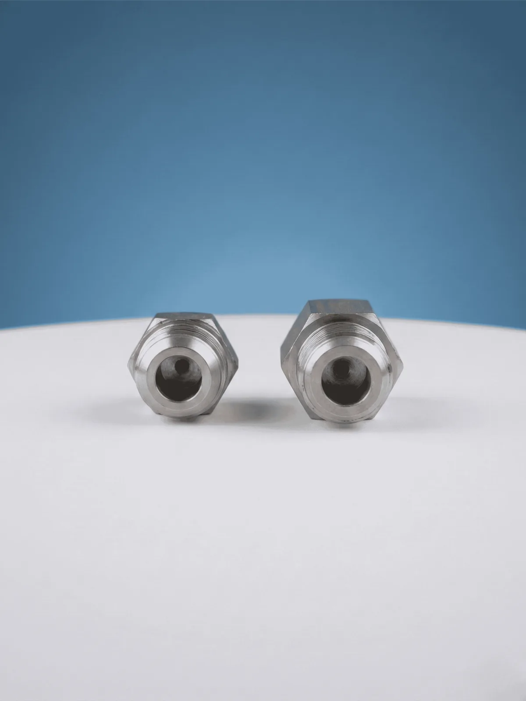
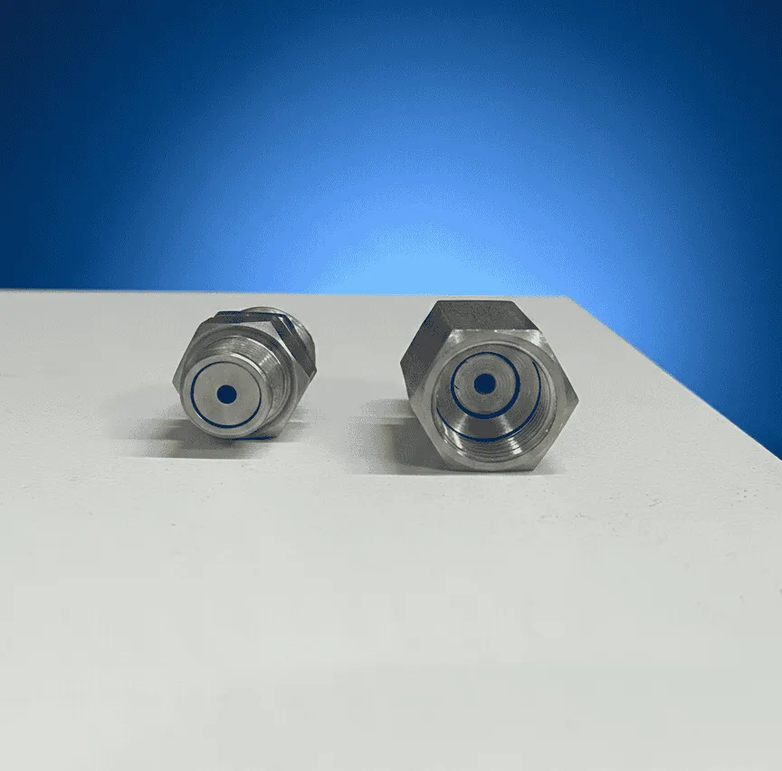

Araç Yıkama Pervanesi Tabanca Döner Rekoru
Maksimum Hareket Özgürlüğü ve Konfor
"Yıkama esnasında yaşanan hortum karışıklığına son veren Araç Yıkama Pervanesi Tabanca Döner Rekoru, kullanıcıya 360 derece hareket kabiliyeti kazandırır. Yüksek basınçlı hortumun bükülmesini ve dolanmasını engelleyerek hem iş güvenliğini artırır hem de ekipmanların yıpranmasını önler. Dayanıklı iç aksamı sayesinde en zorlu yıkama şartlarında bile akışkanlığı bozmadan çalışır, profesyonel kullanımda operatör yorgunluğunu minimize eder."
Öne Çıkan Özellikler:
- Diş Ölçüsü: Farklı sistemlere uygun 3/8" ve 1/2" seçenekleri.
- Fonksiyonel: Hortum katlanmalarını önleyen akıllı döner mekanizma.
- Malzeme: Korozyona ve yüksek su basıncına karşı güçlendirilmiş yapı.
- Uygulama: Standart yıkama tabancaları ve pervaneleriyle tam uyum